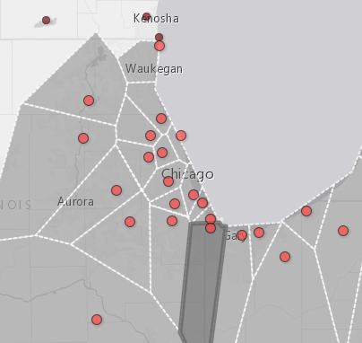
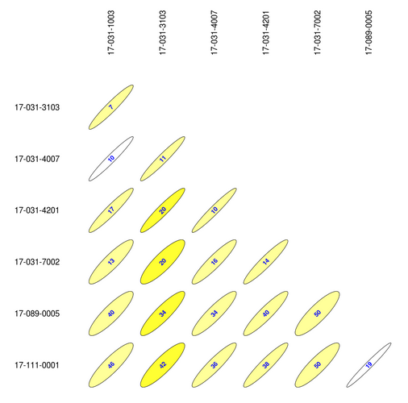
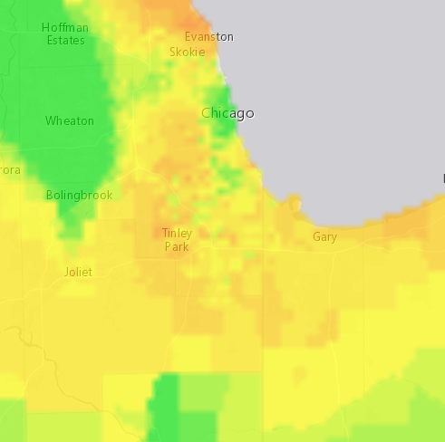
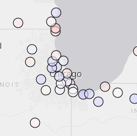

Area Served
Quickly get geographic and demographic data about the areas surrounding monitors.
More »

Correlations
View correlation matrices for monitors in your area of interest.
More »

Exceedence Probabilities
Find areas that might need additional monitoring based on probability of exceeding a threshold.
More »

Removal Bias
Find redundant monitors in your network based on concentration at surrounding monitors.
More »